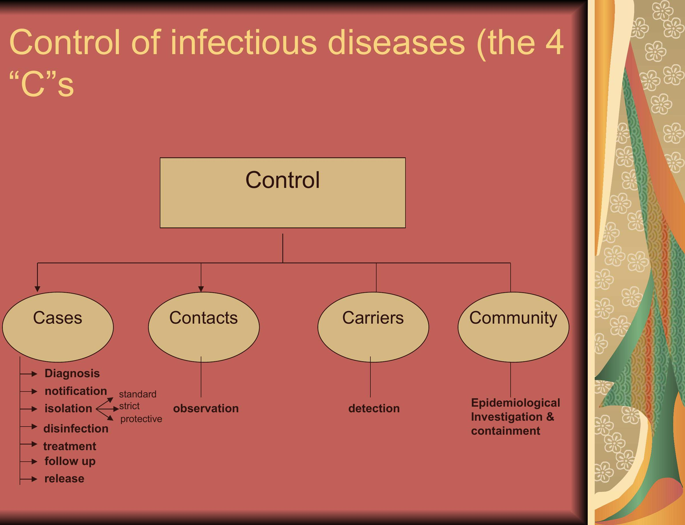

Concepts of Prevention and Control
Prevention
The goals of medicine are to promote health, to preserve health, to restore health when it is impaired, and to minimize suffering and distress.
These goals are embodied in the word "prevention".
Prevention: Definition and Concept
Actions aimed at eradicating, eliminating or minimizing the impact of disease and disability, or if none of these are feasible, retarding the progress of the disease and disability.
The concept of prevention is best defined in the context of levels, traditionally called primary, secondary and tertiary prevention. A fourth level, called primordial prevention, was later added.
Determinants of Prevention
Successful prevention depends upon:
- a knowledge of causation,
- dynamics of transmission,
- identification of risk factors and risk groups,
- availability of prophylactic or early detection and treatment measures,
- an organization for applying these measures to appropriate persons or groups, and
- continuous evaluation of and development of procedures applied
Leavell's Levels of Prevention
| Stage of disease | Level of prevention | Type of response |
|---|---|---|
| Pre-disease | Primary prevention | Health promotion and Specific protection |
| Latent Disease | Secondary prevention | Pre-symptomatic Diagnosis and Treatment |
| Symptomatic Disease | Tertiary prevention |
-Disability limitation for early symptomatic disease -Rehabilitation for late Symptomatic disease |
Levels of prevention
- Primordial prevention
- Primary prevention
- Secondary prevention
- Tertiary prevention
Primordial prevention
Primordial prevention consists of actions and measures that inhibit the emergence of risk factors in the form of environmental, economic, social, and behavioral conditions and cultural patterns of living etc.
It is the prevention of the emergence or development of risk factors in countries or population groups in which they have not yet appeared. For example, many adult health problems (e.g., obesity, hypertension) have their early origins in childhood, because this is the time when lifestyles are formed (for example, smoking, eating patterns, physical exercise).
In primordial prevention, efforts are directed towards discouraging children from adopting harmful lifestyles. The main intervention in primordial prevention is through individual and mass education.
Primary prevention
Primary prevention can be defined as the action taken prior to the onset of disease, which removes the possibility that the disease will ever occur. It signifies intervention in the prepathogenesis phase of a disease or health problem. Primary prevention may be accomplished by measures of "Health promotion" and "specific protection".
It includes the concept of "positive health", a concept that encourages achievement and maintenance of "an acceptable level of health that will enable every individual to lead a socially and economically productive life".
Primary prevention may be accomplished by measures designed to promote general health and well-being, and quality of life of people or by specific protective measures.
Health promotion
Health promotion is " the process of enabling people to increase control over the determinants of health and thereby improve their health".
Approaches for Primary Prevention
The WHO has recommended the following approaches for the primary prevention of chronic diseases where the risk factors are established:
- Population (mass) strategy
- High -risk strategy
Population (mass) strategy
"Population strategy" is directed at the whole population irrespective of individual risk levels. For example, studies have shown that even a small reduction in the average blood pressure or serum cholesterol of a population would produce a large reduction in the incidence of cardiovascular disease. The population approach is directed towards socio-economic, behavioral and lifestyle changes.
High -risk strategy
The high -risk strategy aims to bring preventive care to individuals at special risk. This requires detection of individuals at high risk by the optimum use of clinical methods.
Secondary prevention
It is defined as " action which halts the progress of a disease at its incipient stage and prevents complications." The specific interventions are: early diagnosis (e.g. screening tests, and case finding programs....) and adequate treatment.
Secondary prevention attempts to arrest the disease process, restore health by seeking out unrecognized disease and treating it before irreversible pathological changes take place, and reverse communicability of infectious diseases. It thus protects others from in the community from acquiring the infection and thus provide at once secondary prevention for the infected ones and primary prevention for their potential contacts.
Early diagnosis and treatment
WHO Expert Committee in 1973 defined early detection of health disorders as " the detection of disturbances of homoeostatic and compensatory mechanism while biochemical, morphological and functional changes are still reversible."
The earlier the disease is diagnosed, and treated the better it is for prognosis of the case and in the prevention of the occurrence of other secondary cases.
Tertiary prevention
It is used when the disease process has advanced beyond its early stages. It is defined as "all the measures available to reduce or limit impairments and disabilities, and to promote the patients' adjustment to irremediable conditions." Intervention that should be accomplished in the stage of tertiary prevention are disability limitation, and rehabilitation.
Disability limitation
This involves the sequence of disease → impairment → disability → handicap.
- Impairment: Impairment is "any loss or abnormality of psychological, physiological or anatomical structure or function."
- Disability: Disability is "any restriction or lack of ability to perform an activity in the manner or within the range considered normal for the human being."
- Handicap: Handicap is termed as "a disadvantage for a given individual, resulting from an impairment or disability, that limits or prevents the fulfillment of a role in the community that is normal (depending on age, sex, and social and cultural factors) for that individual."
Rehabilitation
Rehabilitation is "the combined and coordinated use of medical, social, educational, and vocational measures for training and retraining the individual to the highest possible level of functional ability."
Strategy for Prevention
Control, Elimination, and Eradication
Control
The term disease control describes ongoing operations aimed at reducing:
- The incidence of disease
- The duration of disease and consequently the risk of transmission
- The effects of infection, including both the physical and psychosocial complications
- The financial burden to the community.
Control activities focus on primary prevention or secondary prevention, but most programs combine both.
Disease Elimination
Between control and eradication, an intermediate goal has been described, called "regional elimination". The term "elimination" is used to describe interruption of transmission of disease, as for example, elimination of measles, polio and diphtheria from large geographic regions or areas. Regional elimination is now seen as an important precursor of eradication.
Disease Eradication
Eradication literally means to "tear out by roots". It is the process of "Termination of all transmission of infection by extermination of the infectious agent through surveillance and containment".
Eradication is an absolute process, an "all or none" phenomenon, restricted to termination of an infection from the whole world. It implies that disease will no longer occur in a population. To-date, only one disease has been eradicated, that is smallpox.
Monitoring and Surveillance
Monitoring
Monitoring is "the performance and analysis of routine measurements aimed at detecting changes in the environment or health status of population" (Thus we have monitoring of air pollution, water quality, growth and nutritional status, etc).
It also refers to on -going measurement of performance of a health service or a health professional, or of the extent to which patients comply with or adhere to advice from health professionals.
Surveillance
Surveillance means to watch over with great attention, authority and often with suspicion. According to another, surveillance is defined as "the continuous scrutiny (inspection) of the factors that determine the occurrence and distribution of disease and other conditions of ill-health".
Objectives of Surveillance
The main objectives of surveillance are:
- to provide information about new and changing trends in the health status of a population, e.g., morbidity, mortality, nutritional status or other indicators and environmental hazards, health practices and other factors that may affect health
- to provide feed-back which may be expected to modify the policy and the system itself and lead to redefinition of objectives, and
- provide timely warning of public health disasters so that interventions can be mobilized.
Control of infectious diseases (the 4 "C"s)
This section appears to be a heading for a diagram which is not fully legible in the source.
Evaluation of control
Evaluation is the process by which results are compared with the intended objectives, or more simply the assessment of how well a program is performing. Evaluation should always be considered during the planning and implementation stages of a program or activity. Evaluation may be crucial in identifying the health benefits derived (impact on morbidity, mortality, sequelae, patient satisfaction). Evaluation can be useful in identifying performance difficulties. Evaluation studies may also be carried out to generate information for other purposes, e.g., to attract attention to a problem, extension of control activities, training and patient management, etc.
To summarize
The goals of medicine are to promote health, to preserve health, to restore health when it is impaired, and to minimize suffering and distress.
These goals are embodied in the word "prevention".
Successful prevention depends upon a knowledge of causation, dynamics of transmission, identification of risk factors and risk groups, availability of prophylactic or early detection and treatment measures, an organization for applying these measures to appropriate persons or groups, and continuous evaluation of and development of procedures applied.
The objective of preventive medicine is to intercept or oppose the "cause" and thereby the disease process. This epidemiological concept permits the inclusion of treatment as one of the modes of intervention.